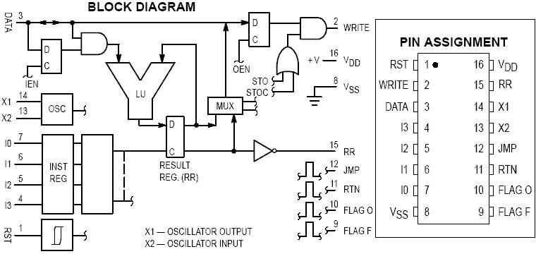
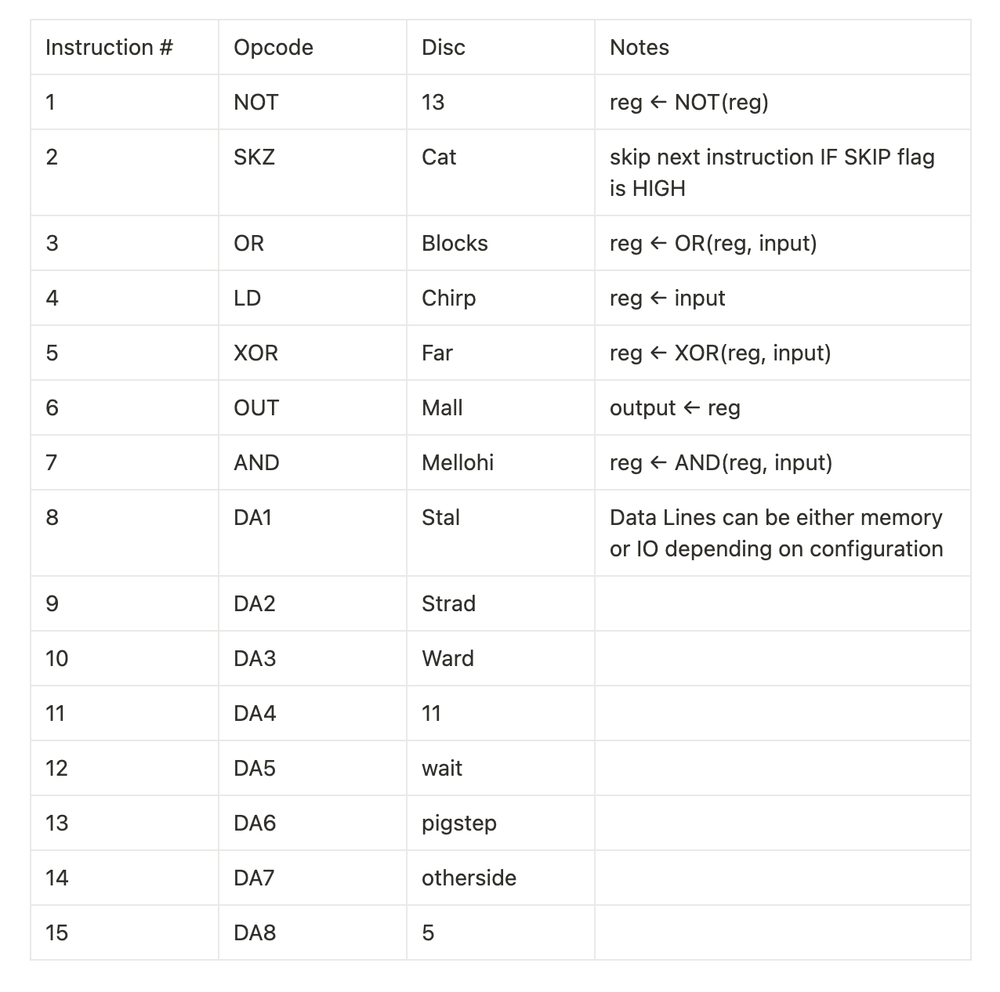
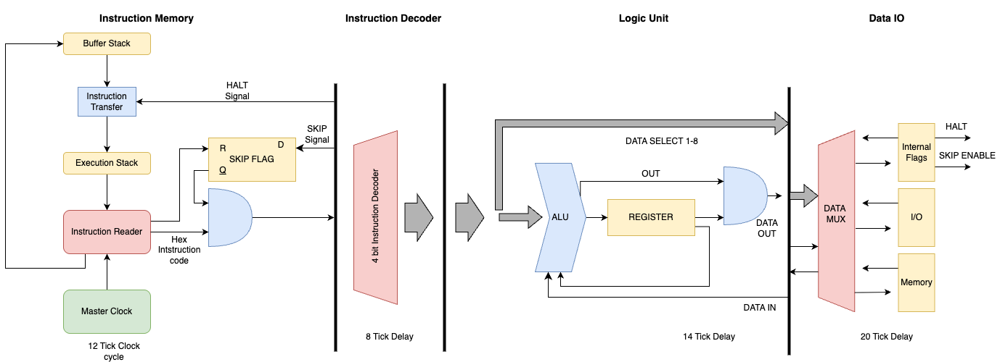

Designing the Smallest computer in Minecraft
Introduction
Torturing turing complete machines out of game mechanics is a time honored tradition among anyone with an interest in computer engineering, and among the countless games and applications this has been done in Minecraft has always remained the most interesting. Due in part to some combination of the fact that logic gates and computation was an intentional game mechanic added relatively early into the games development and the decade of enduring popularity of the game spawning new ideas and updates to increase its capabilities, Minecraft has always been a hotbed of computer-in-videogame innovation. In the years since redstones first introduction the pinnacle of minecraft computers has gone from simple calculators to full on 32-bit computers with built in graphics pipelines capable of rendering their own barebones version of Minecraft. However, as these computers have gotten more and more advanced, even with newer game mechanics they still have been growing larger and larger and completely inacceessible for anyone to build outside of creative mode. So I asked myself a simple questions, what is the smallest, simplest, turing complete (and perhaps even useful) computer you can build in Minecraft?

When I first got this idea for a project the first place I turned for inspiration was the past. Looking up some of the smallest and simplest computers ever commercially made, I came across the ideal architecure to take inspiration from, the aptly named MC14500B. The MC14500 is absurdly simplistic by todays standard, boasting a 4-bit ISA, and a simple 1-bit register it is only capable of a handful of logical operations and a couple of options for control flow. The simple idea of a 1-bit industrial computer for handling simple logic operations quickly and cheaply fit perfectly with the limitation of Minecraft, where memory and bit width come at a premium, but where most simple operations you want to do involve simple binary logic: turning on and off various farms, preventing your storage system from overflowing etc. But I could not just copy the MC14500 and call it a day, while the MC14500 was the perfect CPU to emulate, on its own it was not even close to a full computer. Part of its simplicity was eschewing everything but the bare minimum, relying on the designer to provide what they needed in program memory, instruction control flow, and how I/O was handled. All of these I would need to implement on my own, in a way that was particularly ergonomic with Minecraft mechanics.
Instruction Set

Design Overview
At its core my comptuer (working name MC^2 for MineCraftMicroController) is an incredibly simple design: a single 1-bit register, 4-bit instruction set, Harvard architecture, a handful of I/O, designing this on an FPGA would make for a good intro to computer architecture course's final project, the real trick was to implement is in such a way that it was actually compact in Minecraft. Overall the total construciton of MC^2 can be broken into 4 components, the instruction memory, the logic unit, the I/O, and the working memory tape

Instruction Memory
One of the biggest challenges was the implementation of efficient instruction memory. Using the Jukebox as a decoder we can store a single 4-bit digit as a single item inside a shulker box inside a chest, providing us with plenty of instruction memory to actually write useful programs, with a decently fast read rate on top. But there is no such thing as a free lunch, and there is a good reason why no computer until now have used Jukebox encoding and their main program memory. While it is dense and fast, the fact that our memory is encoded as physical item in chest means that we are limited to the First in - First out read order that hoppers give us, in other words we cannot have any jumps in our program.